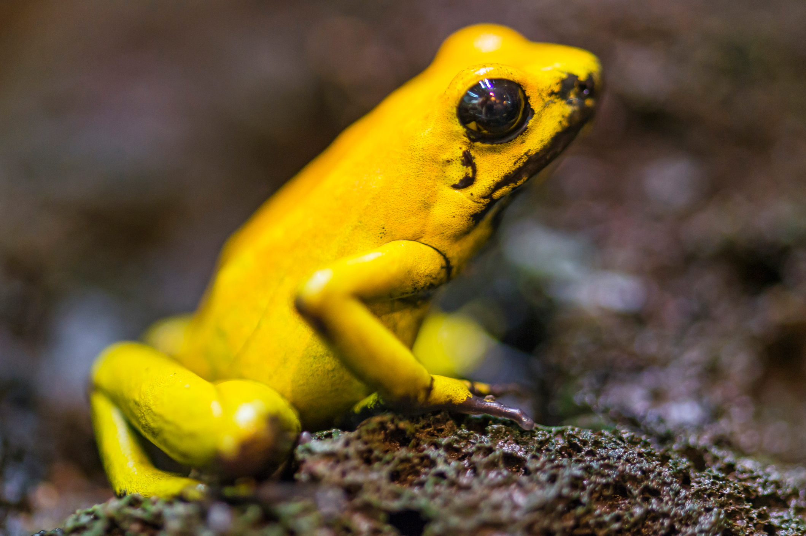
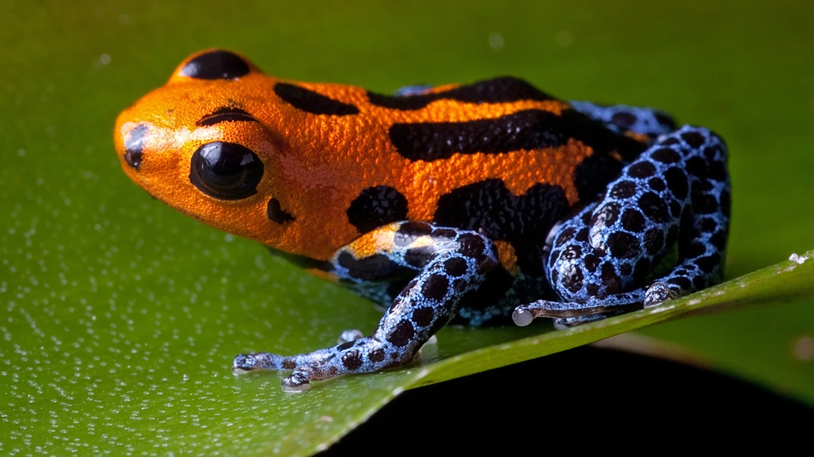
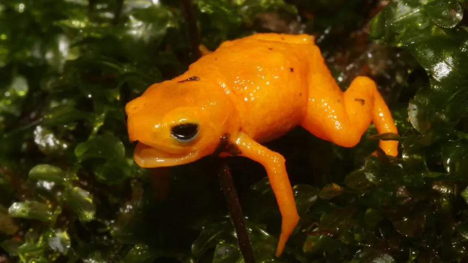

Interesting Facts

1. Indigenous peoples used their toxins to make darts.
Their toxins were placed in the tips of blow darts, giving them their name.

PHOTOGRAPH BY TAMBAKO THE JAGUAR, GETTY IMAGES
2. There are over 170 species of poison dart frog.
There are a huge variety of poison dart frogs, and not all of them are poisonous.

PHOTOGRAPH BY DIRK ERCKEN, DREAMSTIME
3. They are poisonous, not venomous.
This means that they do not inject their toxins into others, like snakes, they instead have to be consumed or licked.

PHOTOGRAPH BY NUNES et al., PLOS ONE
4. The most colorful are the most toxic.
The degree of toxicity generally coincides with how bright they are. The most toxic species have very bright colors, while those that aren’t toxic are dull.